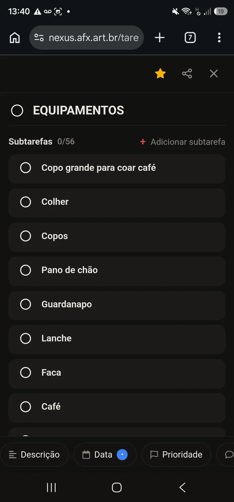
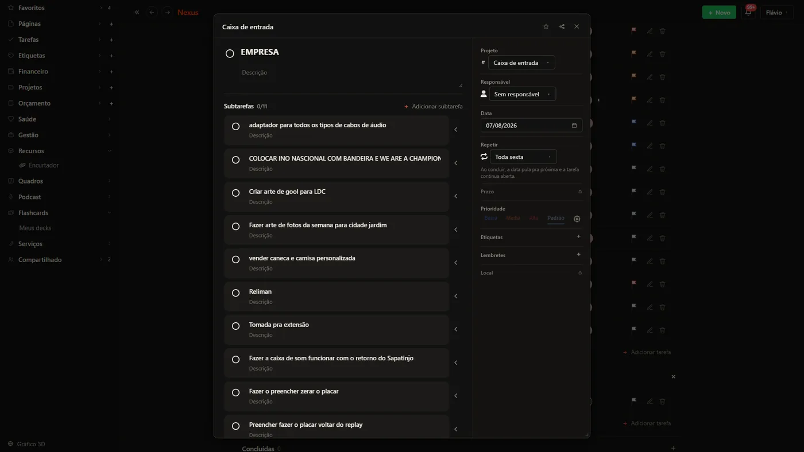

A primeira tela
A mão vai pro teclado, e a primeira coisa que ela escreve não é Java: é a tela. Começar por uma parte que não mostra nada na tela desanima. Então a série começa por HTML e CSS, e o resultado está aí do lado, de verdade.
Como acompanhar. O que aparece no celular ao lado não é foto: é a página pronta, a mesma que a aula vai construir. Role a lista, passe o mouse. Quando o áudio pedir, aperte Próximo.
O que vamos construir.
A folha de uma tarefa: o nome, a lista de subtarefas e os atalhos no pé. O mesmo arquivo nos dois tamanhos. O que muda entre um e outro é uma regra de CSS só, no fim do arquivo.
Nada aqui clica de verdade: os botões não fazem nada, o cartão não desliza. É de propósito. O assunto do módulo é o que o navegador desenha a partir de tags e regras. O comportamento vem depois, e vem em Java.
De onde ela veio.
Não foi inventada pra aula. É a folha de tarefa do Nexus, o sistema que o Flávio usa todo dia, no celular dele e no desktop. A aula refaz essa tela na unha, e a régua é a tela real.


As peças.
section, header, footer, nav, form, h1 a h3, textarea, button, ul e li. Nenhuma entra por catálogo.--fundo, --texto), flexbox pra alinhar, position: sticky pro nome ficar preso no alto, e uma media query só, no fim, que vira tudo pro celular.http://, nunca aberta por file://, e recarregando a cada salvar.O modelo pronto cabe em 150 linhas de HTML e 490 de CSS. Parece muito até ver que cada bloco tem um nome e um motivo.
Um arquivo vira dois.
A aula começa com tudo dentro do mesmo arquivo: o HTML e, no alto dele, o CSS dentro de <style>. No fim, o CSS sai pro arquivo dele e entra por um <link>. A tela não muda um pixel. O que muda é quem cuida de quê.
<head>
<title>EQUIPAMENTOS · Nexus</title>
<style>
:root { --fundo: #141312; --texto: #e9e6df; }
body { background: var(--fundo); }
.subtarefa-cartao { border-radius: 12px; }
... mais 480 linhas ...
</style>
</head>
<head> <title>EQUIPAMENTOS · Nexus</title> <link rel="stylesheet" href="estilo.css"> </head>
:root { --fundo: #141312; --texto: #e9e6df; }
body { background: var(--fundo); }
.subtarefa-cartao { border-radius: 12px; }
... o mesmo CSS, agora na casa dele ...
Separar não é regra de etiqueta. É pra que a mesma folha de estilo sirva a dez páginas, e pra que mexer na cor não obrigue a abrir o arquivo que tem o texto.
Quem escreve é o aluno.
-
1
Ele no teclado. Os primeiros movimentos de cada aula são dele: a pasta, o arquivo, as primeiras tags. O repetitivo vem depois.
-
2
Veredito só quando pedido. Enquanto digita, ninguém aponta linha. A explicação vem depois que ele tentou.
-
3
O modelo é o gabarito. A página que você viu nas telas 1 e 2 fica pronta, do lado, pra comparar. A régua é a tela real do Nexus.
O que transfere: o navegador só entende HTML e CSS. O que muda de stack pra stack é quem escreve esse HTML: hoje é a mão; na etapa 9 vai ser um programa Java montando a mesma folha, linha por linha; em Python ou em JavaScript seria outro programa, escrevendo o mesmo texto. A tela que chega ao navegador é esta.
Olá mundo sem IDE: o VS Code e o terminal, javac e java na mão, e o que a IDE fazia escondido.
Ver a série →